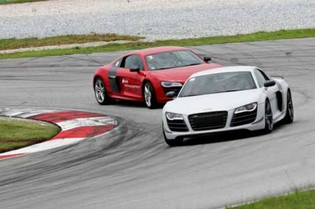
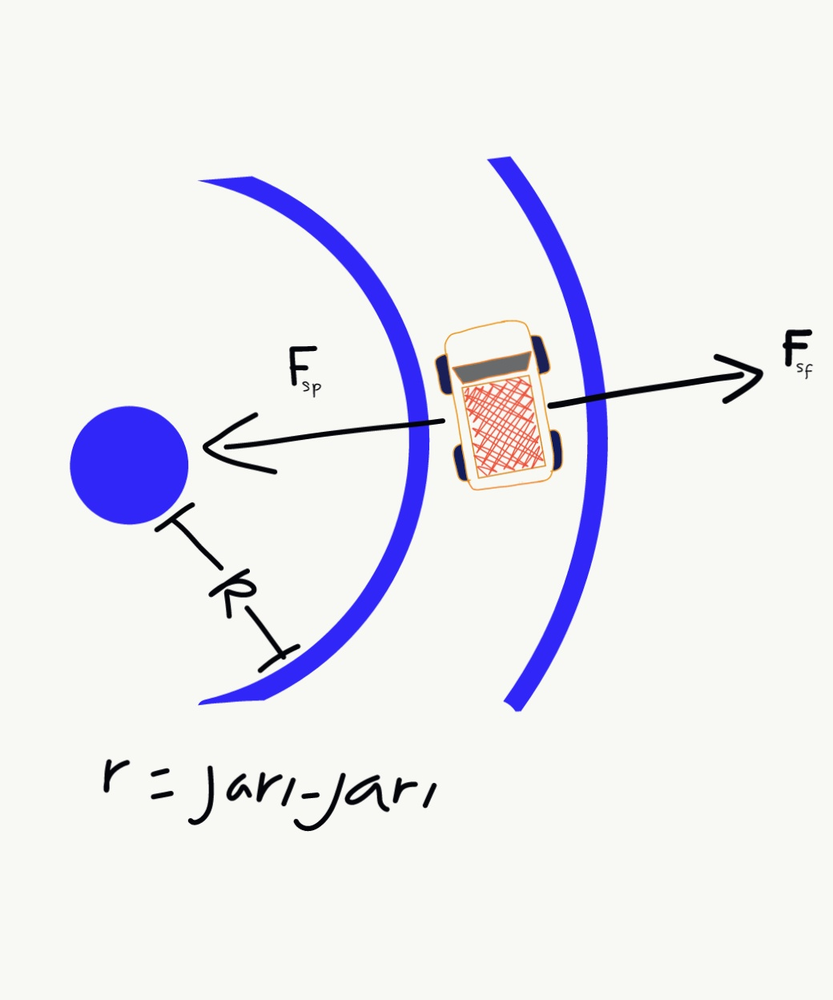
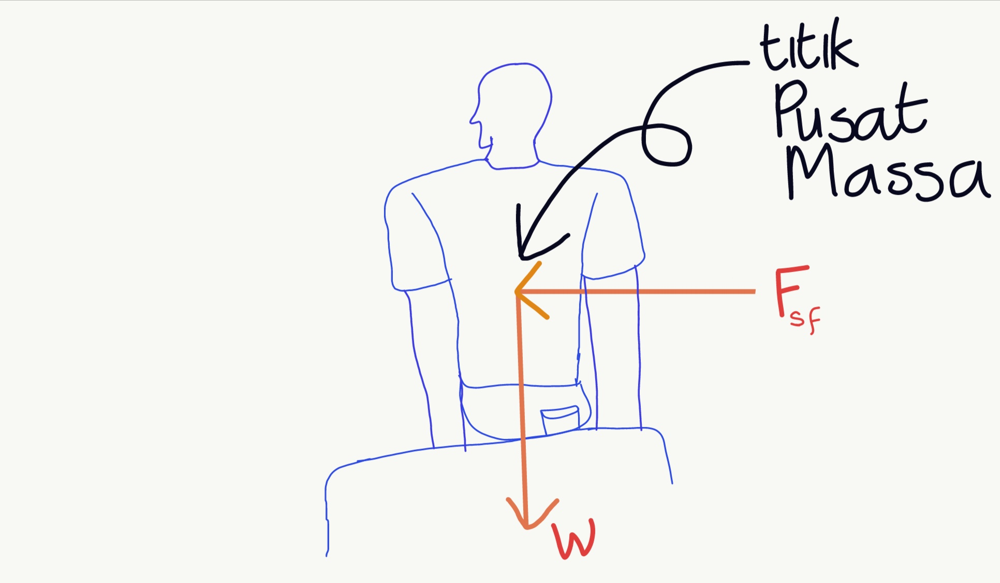
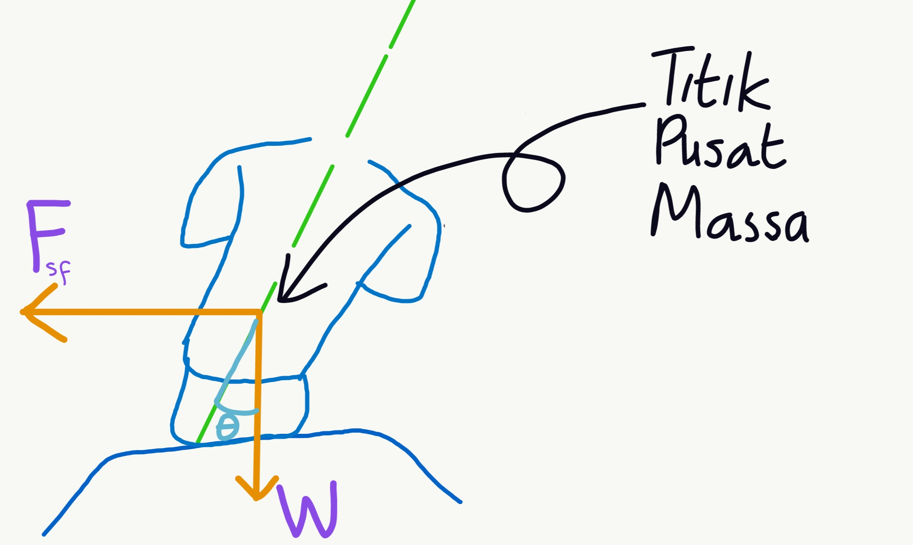

-
Home (current)
-
Fisika
-
Matematika
-
Computer Science
-
Javascript Project
-
Contact Me
-
Terms of Use
cara agar tubuh tidak terlempar saat mengendarai mobil di tikungan tajam
oleh : Fikri Mulyana Setiawan
26 Desember 2020

Anda sedang menaiki sebuah mobil. kebetulan mobil tersebut cukup cepat. lalu, karena ada tikungan tajam, mobil berbelok dengan cepat sehingga anda terlempar ke arah dinding mobil. anda merasakan bahwa seolah-olah ada sebuah gaya yang bekerja pada anda sehingga tubuh anda terlempar. peristiwa ini disebabkan oleh suatu hal yang di dalam ilmu fisika dikenal sebagai efek inersia.
Belum lama ini ketika sedang berada di dalam mobil, saya merasakan efek inersia ini. hal ini membuat saya tidak nyaman. saya kemudian memutar otak untuk mengatasi masalah ini. Dengan menerapkan konsep first principle,saya mulai mencari tau darimana asal gaya yang mendorong saya. beberapa saat kemudian, saya berhasil mengatasi masalah ini. dan sekarang,saya ingin membagikan solusi ini kepada anda
Ingatkah anda bahwa pada saat kelas 10 SMA anda belajar tentang gerak melingkar dan gaya sentripetal? jika anda ingat, hal itu akan sangat membantu anda dalam memahami solusi yang saya berikan. secara sederhana, anda menempuh lintasan melingkar pada saat melewati tikungan jalan, meskipun itu tikungan tajam. pada saat berada pada lintasan lingkaran, selalu ada sebuah gaya yang bekerja, yaitu gaya sentripetal yang bekerja pada benda dan arahnya menuju pusat lingkaran. fungsi dari gaya sentripetal adalah untuk merubah arah gerak benda yang bergerak lurus agar bergerak melingkar. tapi, gaya apakah yang ditahan oleh gaya sentripetal? jawabannya adalah gaya sentrifugal. jika gaya sentripetal berarah ke pusat lingkaran, gaya sentrifugal justru berarah menjauhi pusat linkaran
Gaya sentrifugal sebenarnya bukanlah gaya yang benar benar ada. gaya sentrifugal hanyalah efek dari hukum 1 newton tentang inersia/kelembaman benda. ketika anda menaiki mobil, lalu tiba tiba mobil tersebut direm, anda akan merasakan bahwa tubuh anda didorong ke depan. apakah ada gaya yang mendorong anda? tidak. itu hanya efek dari kelembaman diri kita yang cenderung mempertahankan posisi bergerak,sehingga ketika mobil direm, tubuh kita cenderung untuk tetap bergerak. begitu juga dengan gaya sentrifugal. gaya sentrifugal bukan gaya yang benar benar ada, melainkan hanya akibat dari kelembaman tubuh kita yang cenderung bergerak lurus,sehingga ketika mobil dibelokkan, kita merasa didorong oleh suatu gaya yang sebenarnya tidak ada.gaya sentrifugal selalu mengarah menjauhi pusat lingkaran,seperti gambar berikut:

sumber:dokumentasi penulis
Keterangan:
- $F_{sf}$= gaya sentrifugal
- $F_{sp}$= gaya sentripetal
gaya sentrifugal selalu mengarah menjauhi titik pusat lingkaran. arah ini dapat kita ketahui melalui operasi vektor sederhana. nah, dari sini lah solusi untuk masalah. tadi mulai muncul.berdasarkan hukum 1 newton, kita tau bahwa jika kita ingin diam, maka resultan gaya yang bekerja pada tubuh kita harus sama dengan nol.jika gaya sentrifugal yang bekerja pada tubuh kita mengarah ke luar lingkaran, maka kita harus memberikan gaya pada tubuh kita yang arahnya menuju ke pusat lingkaran sehingga total gaya yang bekerja sama dengan nol. Tapi bagaimana caranya? Caranya yaitu dengan memiringkan badan anda ke pusat lintasan lingkaran yang anda lalui. Alternatif lain : miringkan badan anda ke arah mobil berbelok
Ingin penjelasan yang lebih detail?
oke, jika penjelasan di atas kurang detail, sekarang saya akan menjelaskannya dengan lebih mendalam.Jika dilihat dari belakang, beginilah diagram bebas gaya gaya yang bekerja pada tubuh kita saat berada di dalam mobil:

misalkan jarak titik pusat massa tubuh dari titik tempat kita duduk adalah $l$.dapat kita lihat bahwa jika kita duduk secara tegak lurus, sudut yang terbentuk antara gaya gravitasi dan $l$ adalah 0, dan sudut yang terbentuk antara gaya sentrifugal dan $l$ adalah 90°. karena titik tempat duduk kita selalu tetap (tidak berpindah tempat karena ada gaya gesek), maka sistem diatas dapat dianggap sebagai benda tegar yang berotasi, dengan tubuh kita sebagai benda tegar dan poros putar terletak di titik tempat kita duduk.m kita tau bahwa "penggerak" benda tegar untuk berputar adalah torsi (torque). sekarang coba kita tinjau resultan dari torsi ini:
torsi dari gaya sentrifugal:
$\tau_{sf} = -F_{sf} lsin \theta$
$\theta=90° , maka :$
$\tau_{sf} = -F_{sf} l$
torsi dari gaya berat:
$\tau_{w} = W lsin \theta$
$\theta=0° , maka :$
$\tau_{w} = 0$
dapat kita lihat bahwa total torsi yang bekerja hanyalah torsi yang berasal dari gaya sentrifugal, sehingga tubuh kita bergerak ke kiri (berotasi berlawanan arah jarum jam)
jika tubuh kita dimiringkan ke kanan, diagram bebas gaya gaya yang bekerja akan seperti ini:

berikut adalah total torsi yang bekerja jika tubuh kita dimiringkan :
torsi dari gaya sentrifugal:
$\tau_{sf} = -F_{sf} lsin (90-\theta)$
$\tau_{sf} = -F_{sf} lcos {\theta}$
torsi dari gaya gravitasi:
$\tau_{w} = W lsin \theta$, dimana ${\theta}$ tidak sama dengan nol.
resultan torsi:
$\sum \tau = \tau_{w} + \tau_{sf}$
$\sum \tau =W lsin \theta -F_{sf} lcos {\theta}$
jika badan kita dimiringkan ke kanan, $\theta$ tidak akan bernilai nol. yang kita inginkan adalah badan kita tidak bergerak (dan tidak berotasi), karena itu kita harus membuat sedemikian rupa sehingga resultan torsi di atas sama dengan nol. jika total torsi sudah bernilai nol, tubuh kita tidak akan bergerak (dan berotasi) lagi didalam mobil (alias stabil). bagaimana caranya? caranya yaitu dengan memiringkan tubuh dengan sudut ($\theta$) tertentu sehingga total torsi bernilai nol. sudut yang harus kita bentuk agar total torsi bernilai nol ini cukup diperkirakan saja (tidak terlalu sulit kok!)
© Fikri Mulyana Setiawan